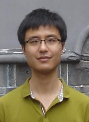

Research Scientist @ NVIDIA
NeMo Speech Team · Santa Clara, CA, USA
I am a Research Scientist at NVIDIA, working on Multimodal LLMs. Before joining NVIDIA, I worked at Microsoft CoreAI under Jinyu Li, after receiving my Ph.D. in Computer Science from Johns Hopkins University. At JHU I was affiliated with the Center for Language and Speech Processing (CLSP), advised by Prof. Sanjeev Khudanpur and former JHU Prof. Daniel Povey.
My work centers on speech recognition (ASR), with broad interests in machine learning and natural language processing. I am one of the major contributors to the Kaldi project and the owner of the open-source end-to-end ASR toolkit Espresso. I interned at Google's speech team and Amazon's Alexa ASR team in 2017 and 2018 respectively, working on end-to-end ASR.
I received my B.S. and M.S. in Computer Science from Nanjing University in 2009 and 2012, advised by Prof. Tong Lu.
Ph.D. in Computer Science
Sep 2012 – Sep 2020Department of Computer Science, Johns Hopkins University · Baltimore, MD, USA
M.S. in Computer Science
Sep 2009 – Jun 2012Department of Computer Science and Technology, Nanjing University · Nanjing, China
B.S. in Computer Science
Sep 2005 – Jun 2009Department of Computer Science and Technology, Nanjing University · Nanjing, China
Staff Research Scientist
Apr 2026 – PresentNeMo Speech Team, NVIDIA Corporation · Santa Clara, CA, USA
Principal Applied Scientist
Sep 2025 – Mar 2026Senior Applied Scientist
Sep 2020 – Aug 2025CoreAI, Microsoft Corporation · Redmond, WA, USA
Applied Scientist Intern
May 2018 – Aug 2018Amazon.com, Inc. · Seattle, WA, USA
Research Intern
May 2017 – Aug 2017Google LLC · Mountain View, CA, USA
Research Assistant
Sep 2015 – Aug 2020Center for Language and Speech Processing, Johns Hopkins University · Baltimore, MD, USA
Research Assistant
Sep 2014 – Aug 2015The Lieber Institute for Brain Development · Baltimore, MD, USA
Teaching Assistant · Machine Learning
Fall 2016, Fall & Spring 2014Johns Hopkins University
Teaching Assistant · Information Retrieval and Web Agents
Spring 2015Johns Hopkins University
Teaching Assistant · Machine Learning in Complex Domains
Fall 2013Johns Hopkins University
Teaching Assistant · Algorithms for Sensor-based Robotics
Spring 2013Johns Hopkins University
Teaching Assistant · Programming in Java
Spring 2010Nanjing University
Speech Detection and Speech Recognition
Xing Fan, I-Fan Chen, Yuzong Liu, Bjorn Hoffmeister, Yiming Wang, Tongfei Chen
3D Model Comparison and Retrieval Method based on Kernel Density Estimation
Tong Lu, Yiming Wang